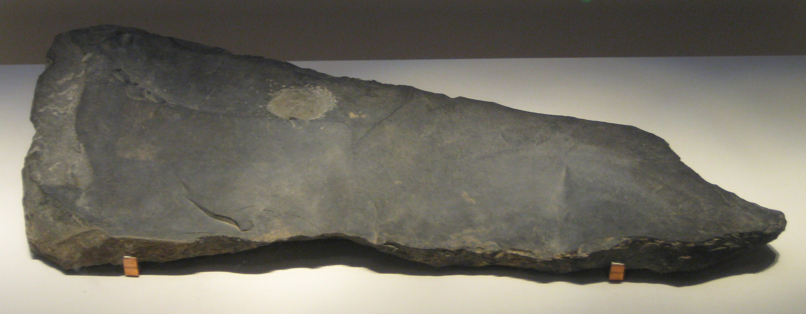

Xia Dynasty
The Xia dynasty (Chinese: 夏朝; pinyin: Xià Cháo; Wade–Giles: Hsia-Ch'ao; IPA: [ɕiâ tʂʰɑ̌ʊ̯]; c. 2070 – c. 1600 BC) is the first dynasty in traditional Chinese history. It is described in ancient historical chronicles such as the Bamboo Annals, the Classic of History and the Records of the Grand Historian. According to tradition, the dynasty was established by the legendary Yu the Great[1] after Shun, the last of the Five Emperors, gave his throne to him. The Xia was later succeeded by the Shang dynasty (1600–1046 BC).
According to the traditional chronology based upon calculations by Liu Xin, the Xia ruled between 2205 and 1766 BC; according to the chronology based upon the Bamboo Annals, it ruled between 1989 and 1558 BC. The Xia–Shang–Zhou Chronology Project concluded that the Xia existed between 2070 and 1600 BC. The tradition of tracing Chinese political history from heroic early emperors to the Xia to succeeding dynasties comes from the idea of the Mandate of Heaven, in which only one legitimate dynasty can exist at any given time, and was promoted by the Confucian school in the Eastern Zhou period, later becoming the basic position of imperial historiography and ideology. Although the Xia is an important element in early Chinese history, reliable information on the history of China before 13th century BC can only come from archaeological evidence since China's first established written system on a durable medium, the oracle bone script, did not exist until then;[2] however, no mention of the Xia, or the supposed conquest of the Xia by the Shang, is found in any oracle bones found to date. The first documentary reference to the Xia dates from more than a thousand years later. Thus, despite efforts by Chinese archaeologists to link the Xia with Bronze Age Erlitou archaeological sites,[3] the Xia dynasty is considered by many modern historians to be legendary.
Traditional accounts
The Xia dynasty was described in classic texts such as the Classic of History (Shujing), the Bamboo Annals, and the Records of the Grand Historian (Shiji) by Sima Qian. According to tradition, the Huaxia were the ancestral people of the Han Chinese.[4][5]
Origins and early development
Traditional histories trace the development of the Xia to the legendary Three Sovereigns and Five Emperors. According to ancient Chinese texts, before the Xia dynasty was established, battles were frequent between the Xia tribe and Chi You's tribe. The Xia tribe slowly developed around the time of Zhuanxu, one of the Five Emperors. The Records of the Grand Historian and the Classic of Rites say that Yu the Great is the grandson of Zhuanxu, but there are also other records, like Ban Gu, that say Yu is the fifth generation of Zhuanxu. Based on this, tradition ascribes the ancestry of the Xia clan to Zhuanxu.[citation needed]
Gun's attempt to stop the flood
Gun, the father of Yu the Great, is the earliest recorded member of the Xia clan. When the Yellow River flooded, many tribes united together to control and stop the flooding. Gun was appointed by Yao to stop the flooding. He ordered the construction of large blockades to block the path of the water. The attempt of Gun to stop the flooding lasted for nine years, but it was a failure because the floods became stronger. After nine years, Yao had already given his throne to Shun. Gun was ordered to be imprisoned for life to reform the Eastern Barbarians by Shun at Yushan (Chinese: 羽山), a mountain located between modern Donghai County in Jiangsu Province and Linshu County in Shandong Province.
Yu the Great's attempt to stop the floods
Yu was highly trusted by Shun, so Shun appointed him to finish his father's work, which was to stop the flooding. Yu's method was different from his father's: he organized people from different tribes and ordered them to help him build canals in all the major rivers that were flooding and lead the water out to the sea. Yu was dedicated to his work. People praised his perseverance and were inspired, so much so that other tribes joined in the work. Legend says that in the 13 years it took him to successfully complete the work to stop the floods, he never went back to his home village to stop and rest, even though he passed by his house three times.
Establishment
Yu's success in stopping the flooding increased agricultural production (since the floods were destructive). The Xia tribe's power increased and Yu became the leader of the surrounding tribes. Soon afterwards Shun sent Yu to lead an army to suppress the Sanmiao tribe, which continuously abused the border tribes. After defeating them, he exiled them south to the Han River area. This victory strengthened the Xia tribe's power even more. As Shun aged, he thought of a successor and relinquished the throne to Yu, whom he deemed worthy. Yu's succession marks the start of the Xia dynasty. As Yu neared death he passed the throne to his son, Qi, instead of passing it to the most capable candidate, thus setting the precedent for dynastic rule or the Hereditary System. The Xia dynasty began a period of family or clan control.[citation needed] It is believed that Zhenxun (modern Gongyi) was one of the capitals of the dynasty.
Overthrow
Jie, the last king, was said to be corrupt. He was overthrown by Tang, the first king of the Shang dynasty. Tang is said to have given the small state of Qi as a fief to the remnants of the Xia ruling family. This practice was referred to as 二王三恪.Modern skepticism
Stone 'qing' (percussion instrument) from the Erlitou Culture. Unearthed at Dongxialeng, Xiaxian, Shanxi Province, 1974. The paucity of written evidence and the time gap between the supposed time of the Xia and the first written references to it have meant that the historicity of the Xia dynasty itself and the traditional narrative of its history is at best uncertain. The Skeptical School of early Chinese history, started by Gu Jiegang in the 1920s, was the first group of scholars within China to systematically question the traditional story of its early history. By critically examining the development of the narrative of early Chinese history throughout history, Gu concluded "the later the time, the longer the legendary period of earlier history... early Chinese history is a tale told and retold for generations, during which new elements were added to the front end".[6] Among other points, Gu and other historians note certain parallels between the traditional narrative of Xia history and Shang history that would suggest probable Zhou-era fabrication or at least embellishment of Xia history. Yun Kuen Lee's criticism of nationalist sentiment in developing an explanation of Three Dynasties chronology focuses on the dichotomy of evidence provided by archaeological versus historical research, in particular the claim that the archaeological Erlitou Culture is also the historical Xia dynasty. "How to fuse the archaeological dates with historical dates is a challenge to all chronological studies of early civilization."[6] In The Shape of the Turtle: Myth, Art, and Cosmos in Early China, Sarah Allan noted that many aspects of the Xia are simply the opposite of traits held to be emblematic of the Shang dynasty. The implied dualism between the Shang and Xia, Allan argues, is that while the Shang represent fire or the sun, birds and the east, the Xia represent the west and water. The development of this mythical Xia, Allan argues, is a necessary act on the part of the Zhou dynasty, who justify their conquest of the Shang by noting that the Shang had supplanted the Xia.
Archaeological discoveries
Archaeologists have uncovered urban sites, bronze implements, and tombs that point to the possible existence of the Xia dynasty at locations cited in ancient Chinese historical texts. There exists a debate as to whether or not the Erlitou culture was the site of the Xia dynasty. Radiocarbon dating places the site at c. 2100 to 1800 BC, providing physical evidence of the existence of a state contemporaneous with and possibly equivalent to the Xia dynasty as described in Chinese historical works.[7] In 1959, a site located in the city of Yanshi was excavated containing large palaces that some archaeologists have attributed to capital of the Xia dynasty. Through the 1960s and 1970s, archaeologists have uncovered urban sites, bronze implements, and tombs in the same locations cited in ancient Chinese historical texts regarding Xia;[8] at a minimum, the era traditionally denoted as the Xia dynasty marked an evolutionary stage between the late neolithic cultures and the urban civilization of the Shang dynasty.[8]
In 2011, Chinese archaeologists uncovered the remains of an imperial sized palace—dated to about 1700 BC—at Erlitou in Henan, further fueling the discussions about the existence of the dynasty.[9]
Archaeological evidence of a large outburst flood that destroyed the Lajia site on the upper reaches of the Yellow River has been dated to about 1920 BC. This date is shortly before the rise of the Erlitou culture in the middle Yellow River valley and the Yueshi culture in Shandong, following the decline of the Longshan culture in the North China Plain. The authors suggest that this flood may have been the basis for the later myth, and contributed to the transition of cultures. They further argue that the timing is further evidence for the identification of the Xia with the Erlitou culture.[10] However, no evidence of contemporaneous widespread flooding in the North China Plain has yet been found.[11]
Sovereigns of the Xia dynasty
The following table lists the rulers of Xia according to Sima Qian's Shiji. Unlike Sima's list of Shang dynasty kings, which is closely matched by inscriptions on oracle bones from late in that period, records of Xia rulers have not yet been found in archeological excavations of contemporary sites, or records on later Shang dynasty oracle bones.
| Posthumous Names (Shi Hao 諡號)1 | ||||
|---|---|---|---|---|
| Order | Reign | Chinese | Pinyin | Notes |
| 01 | 45 | 禹 | Yǔ | Also Yu the Great (大禹; Dà Yǔ) |
| 02 | 10 | 啟 | Qǐ | Son of Yu |
| 03 | 29 | 太康 | Tai Kang | |
| 04 | 13 | 仲康 | Zhòng Kāng | |
| 05 | 28 | 相 | Xiāng | |
| 06 | 21 | 少康 | Shào Kāng | Restored the corrupt Xia dynasty |
Descendants
Zengzi was a descendant of the Xia dynasty Kings through Shao Kang.[12][13]
The Kings of the State of Yue were descendants of the Xia dynasty Kings through Shao Kang.
When the Xia dynasty was overthrown by the Shang dynasty, Xia royal descendants were given a title and fiefs by the Shang King in the Qi (Henan), and Zeng (state).
Xia dynasty family tree
References
Citations
- Mungello, David E. The Great Encounter of China and the West, 1500–1800 Rowman & Littlefield; 3 ed (28 March 2009) ISBN 978-0-7425-5798-7 p. 97.
- Bagley, Robert. "Shang Archaeology." in The Cambridge History of Ancient China. Michael Loewe and Edward Shaughnessy, ed. Cambridge: Cambridge University Press, 1999.
- Liu, L. & Xiu, H., "Rethinking Erlitou: legend, history and Chinese archaeology", Antiquity, 81:314 (2007) pp. 886–901.
- Cioffi-Revilla, Claudio; Lai, David (1995). "War and Politics in Ancient China, 2700 BC to 722 BC.". The Journal of Conflict Resolution. 39 (3): 471–472. doi:10.1177/0022002795039003004.
- Lung, Rachel (2011), Interpreters in early imperial China, Amsterdam: John Benjamins Publishing Company, p. 5, ISBN 978-90-272-2444-6
- Yun Kuen Lee, "Building the Chronology of Early Chinese History". Asian Perspectives, Vol. 41, 2002.
- Fairbank, John K. China: A New History. Cambridge: Harvard University Press, 1992, page 35.
- "China – the ancient dynasties". Library of Congress Country Studies.
- "China finds 3,600-year-old palace". People's Daily Online. 13 December 2011.
- Wu, Qinglong; Zhao, Zhijun; Liu, Li; Granger, Darryl E.; Wang, Hui; Cohen, David J.; Wu, Xiaohong; Ye, Maolin; Bar-Yosef, Ofer; Lu, Bin; Zhang, Jin; Zhang, Peizhen; Yuan, Daoyang; Qi, Wuyun; Cai, Linhai; Bai, Shibiao (2016). "Outburst flood at 1920 BCE supports historicity of China's Great Flood and the Xia dynasty". Science. 353 (6299): 579–582. doi:10.1126/science.aaf0842.
- Normile, Dennis (2016). "Massive flood may have led to China's earliest empire". News. American Association for the Advancement of Science. Retrieved 5 August 2016.
- 《宗聖志》，（清）曾國荃續修，宗聖奉祀官府，1974年
- 《武城曾氏重修族譜》，（清）曾繁墫纂，1807年
- Mungello, David E. The Great Encounter of China and the West, 1500–1800 Rowman & Littlefield; 3 edition (28 March 2009) ISBN 978-0-7425-5798-7 p.97.
- Wang Quangen 王泉根, (1993). Huaxia Quming Yishu 華夏取名藝術. (Taipei: Zhishu-fang Chuban Jituan 知書房出版集團), 42.
Sources
Chinese Wikisource has original text related to this article: Shiji (in Chinese)
- Allan, Sarah (1991), The Shape of the Turtle: Myth, Art, and Cosmos in Early China, State University of New York Press, ISBN 978-0-7914-0459-1.
- Allan, Sarah (2007), "Erlitou and the Formation of Chinese Civilization: Toward a New Paradigm", The Journal of Asian Studies, 66 (2): 461–496, doi:10.1017/S002191180700054X.
- Keightley, David N. (1999), "The Shang: China's first historical dynasty", in Loewe, Michael; Shaughnessy, Edward L., The Cambridge History of Ancient China, Cambridge: Cambridge University Press, pp. 232–291, ISBN 978-0-521-47030-8.
- Lee, Yun Kuen (2002), "Building the chronology of early Chinese history", Asian Perspectives, 41 (1): 15–42, doi:10.1353/asi.2002.0006.
- Lewis, Mark Edward (2012), The Flood Myths of Early China, SUNY Press, ISBN 978-0-7914-8222-3.
- Li, Feng (2013), Early China: A Social and Cultural History, Cambridge University Press, ISBN 978-0-521-89552-1.
- Liu, Li (2009), "Academic freedom, political correctness, and early civilisation in Chinese archaeology: the debate on Xia-Erlitou relations", Antiquity, 83 (321): 831–843, doi:10.1017/S0003598X0009904X.
- Liu, Li; Chen, Xingcan (2012), The Archaeology of China: From the Late Paleolithic to the Early Bronze Age, Cambridge University Press, ISBN 978-0-521-64310-8.
- Liu, Li; Xu, Hong (2007), "Rethinking Erlitou: legend, history and Chinese archaeology", Antiquity, 81 (314): 886–901, doi:10.1017/S0003598X00095983.
- Mair, Victor; Brooks, E. Bruce (2013), "Was There a Xià Dynasty?" (PDF), Sino-Platonic Papers, 238.
- Nylan, Michael (2001), The Five "Confucian" Classics, Yale University Press, ISBN 978-0-300-08185-5.
- Wang, Haicheng (2014), Writing and the Ancient State: Early China in Comparative Perspective, Cambridge University Press, ISBN 978-1-107-78587-8.
Further reading
- Allen, Herbert J. (translator) (1895). "Ssŭma Ch'ien's Historical Records, Chapter II – The Hsia Dynasty". Journal of the Royal Asiatic Society. 27 (1): 93–110. doi:10.1017/S0035869X00022784.
- Legge, James (translator) (1865). "The Annals of the Bamboo Books: The Dynasty of Hea". The Chinese Classics, volume 3, part 1. pp. 117–127.
External links
Wikimedia Commons has media related to Xia Dynasty.